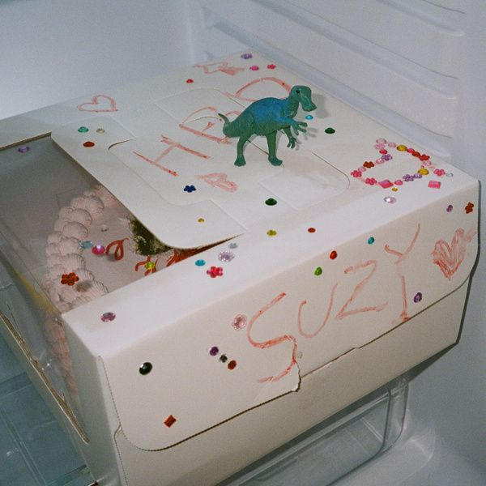

안녕하세요 라보엠입니다.
가수이자 배우로 활약 중인 수지가 2년 만에 새 디지털 싱글 "Come back"으로 음악 팬들 곁으로 돌아왔습니다. 2025년 2월 17일 오후 6시, 각종 음원 사이트를 통해 공개된 이 곡은 수지의 성숙해진 음악적 역량을 엿볼 수 있는 작품으로 주목받고 있습니다.

수지 Come back 노래의 메시지
수지의 "Come back"은 잠시 멀어진 사랑하는 사람이 언젠가 돌아오기를 기다리는 마음을 담아낸 곡입니다. 순수한 기다림과 동화 같은 아름다운 사랑을 그려내며, 차분한 피아노와 어쿠스틱 기타 멜로디가 곡의 감성을 더욱 깊이 있게 만들어냅니다.
시간이 지나며 더욱 단단해진 사랑의 이야기를 담고 있는 이 곡은, 수지의 성숙해진 보컬로 시간이 흘러도 변치 않는 사랑의 견고함을 표현해냅니다. 특히 후반부로 갈수록 점점 깊어지는 감정선을 따라 폭발하듯 표현되는 에너지가 인상적입니다.
함께 공개된 뮤직비디오는 수지의 일상적인 모습을 담아내며 노래의 감성을 시각적으로 표현했습니다. 집 안팎에서의 일상을 보여주는 장면들은 기다림의 아픔보다는 재회의 설렘을 더욱 몰입감 있게 그려냅니다. 빈티지한 무드의 필름 질감으로 표현된 영상미는 노래의 감성을 한층 더 끌어올립니다.
수지 Come back 노래 가사
Come back to me 아이처럼
늘 한 걸음씩 느려도 괜찮아
Come back to me 동화처럼
더 오래오래 행복할 수 있어
키가 커진 나의 사랑은
숨길 수 없이 푸르러
오 너는 그대로 돌아오면 돼
나는 이대로 오래 기다려줄게
손 닿을 수 있는 someday
Come back to me
hands on my hands
키가 훌쩍 커진 마음은
숨을 수 없이 피었어
오 You could never leave
The light will light the way (your way)
혼자 있어도 애태우지 않을게 (it’s true)
너는 그렇게 돌아오면 돼 (your way)
나는 이렇게 오래 기다리면 돼 (it's true)
제작 과정과 참여
이번 싱글은 수지가 가수로서 오랜만에 팬들과 만나는 작품인 만큼, 전반적인 싱글 제작 과정에 적극적으로 참여하며 애정을 쏟았다고 합니다. 특히 콘셉트 구상에도 참여하여 자신만의 아이디어를 반영했다고 하니, 수지의 음악에 대한 열정과 팬들과 소통하고자 하는 의지를 엿볼 수 있습니다.
"Come back"의 프로듀싱은 수지와 이전에도 함께 작업한 강현민 프로듀서가 맡았습니다. "Satellite"와 "Cape" 등 수지의 히트곡을 함께 만들어낸 바 있는 강현민 프로듀서와의 지속적인 협업은 이번 신곡에서도 수지의 깊어진 감성과 음악적 스타일을 효과적으로 담아내는 데 큰 역할을 했을 것으로 보입니다.
2년이라는 긴 공백기 끝에 발표된 이번 싱글은 수지의 음악적 성장과 변화에 대한 기대를 한껏 높이고 있습니다. 가수와 배우로서의 다재다능한 면모를 다시 한번 확인시켜준 수지의 이번 컴백은 그녀의 앞으로의 행보에 대한 관심도 함께 불러일으키고 있습니다.
수지가 참여한 뮤직비디오 - 에피톤 프로젝트 첫사랑
수지의 노래도 좋지만 저는 첫사랑의 아이콘인 수지가 참여한 뮤직비디오를 참좋아합니다.
[지금이노래] 에피톤 프로젝트 첫사랑 가사 수지 뮤비
안녕하세요 한스입니다. 아직은 겨울이지만 꼭 봄이 곧 올것 같은 기분입니다. 봄날을 기다리며 듣기 좋을 노래 에피톤 프로젝트의 첫사랑을 소개해드리겠습니다. 이 노래는 에피톤 프로젝트의
umm.la-bohe.me
맺음말
수지의 "Come back"은 팬들을 위한 '선물'로 준비된 만큼, 그녀의 음악 커리어에 있어 큰 의미를 더할 것으로 보입니다. 이 새로운 싱글이 대중들에게 어떻게 받아들여질지, 그리고 수지의 예술적 여정에 어떤 영향을 미칠지 귀추가 주목됩니다. 음악과 연기 활동을 균형 있게 이어가고 있는 수지의 다재다능한 재능이 앞으로도 다양한 분야에서 관객들을 매료시킬 것으로 기대됩니다.